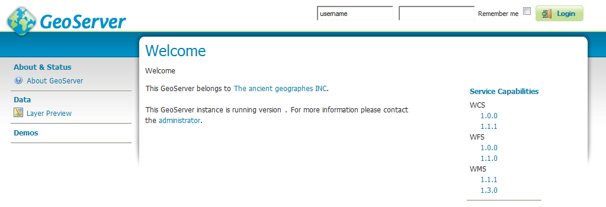

Windows binary¶
Note
For installing on Windows with an existing application server such as Tomcat, please see the Web archive section.
The other way of installing GeoServer on Windows is to use the platform-independent binary. This version is a GeoServer web application bundled inside Jetty, a lightweight and portable application server. It has the advantages of working very similarly across all operating systems and is very simple to set up.
Installation¶
Make sure you have a Java Runtime Environment (JRE) installed on your system. GeoServer requires a Java 8 or Java 11 environment, as provided by AdoptOpenJDK Windows installers.
Note
For more information about Java and GeoServer, please see the section on Java Considerations.
Navigate to the GeoServer Download page.
Select the version of GeoServer that you wish to download. If you’re not sure, select Stable.
Select Platform Independent Binary on the download page.
Download the archive and unpack to the directory where you would like the program to be located.
Note
A suggested location would be
C:\Program Files\GeoServer.
Setting environment variables¶
You will need to set the JAVA_HOME environment variable if it is not already set. This is the path to your JRE such that %JAVA_HOME%\bin\java.exe exists.
Navigate to .
Under System variables click New.
For Variable name enter
JAVA_HOME. For Variable value enter the path to your JDK/JRE.Click OK three times.
Note
You may also want to set the GEOSERVER_HOME variable, which is the directory where GeoServer is installed, and the GEOSERVER_DATA_DIR variable, which is the location of the GeoServer data directory (which by default is %GEOSERVER_HOME\data_dir). The latter is mandatory if you wish to use a data directory other than the default location. The procedure for setting these variables is identical to setting the JAVA_HOME variable.
Running¶
Note
This can be done either via Windows Explorer or the command line.
Navigate to the
bindirectory inside the location where GeoServer is installed.Run
startup.bat. A command-line window will appear and persist. This window contains diagnostic and troubleshooting information. This window must be left open, otherwise GeoServer will shut down.Navigate to
http://localhost:8080/geoserver(or wherever you installed GeoServer) to access the GeoServer Web administration interface.
If you see the GeoServer logo, then GeoServer is successfully installed.
GeoServer installed and running successfully¶
Stopping¶
To shut down GeoServer, either close the persistent command-line window, or run the shutdown.bat file inside the bin directory.
Uninstallation¶
Stop GeoServer (if it is running).
Delete the directory where GeoServer is installed.